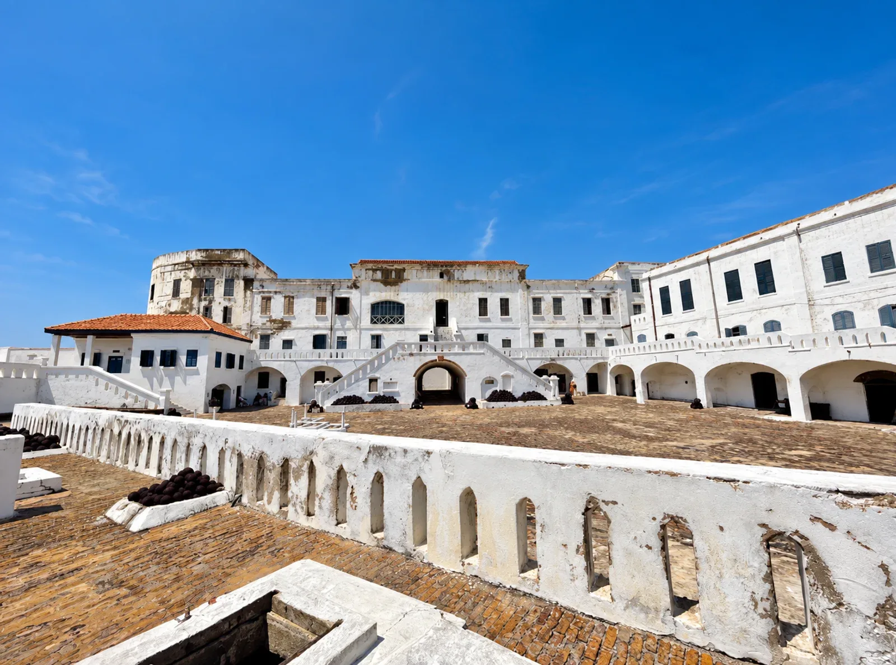

Cape Coast, Central Region
Cape Coast Castle & Museum
Castle tours and museum exhibitions exploring the transatlantic slave trade. The museum is part of the castle visit.
Plan my visit →
Cape Coast Castle courtyard and main building.
Download photo ↗Your Ghana trip, your way
Make room for
what moves you.
Choose the places you want to see. Add your preferred date and optional meeting-point notes, then review your proposed visit.
A plan, before a promise.
This preview saves your details in this browser session. It does not send a request or reserve a visit.
Visitor information
- Opening hours
- Current opening hours have not been verified. Confirm them before travelling.
- Admission
- Current admission fees have not been verified. Do not assume entry is free.
- Visitor access
- Public visitor access has not been verified. Check with the venue or local custodian before travelling.
- Permissions
- Photography, group visits and any permission requirements have not been verified. Ask the venue or local custodian.
Information reviewed on 7 October 2026. Current arrangements may change; confirm before visiting.
Sources: crcc.gov.gh 1 ↗